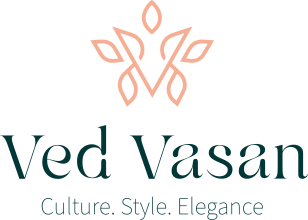
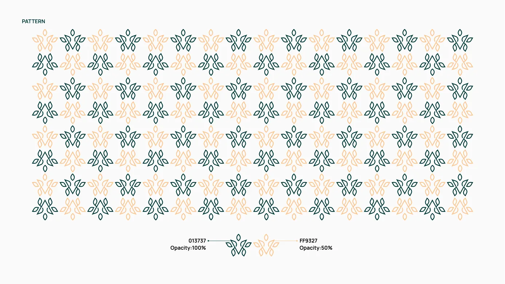
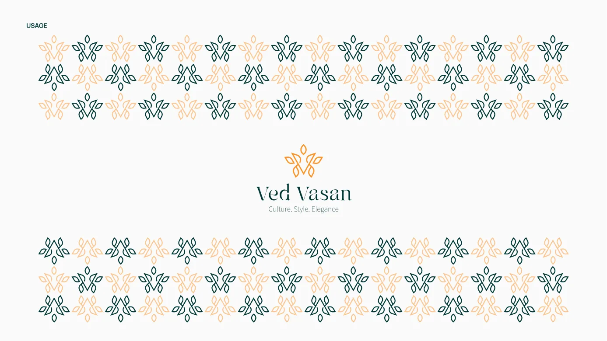
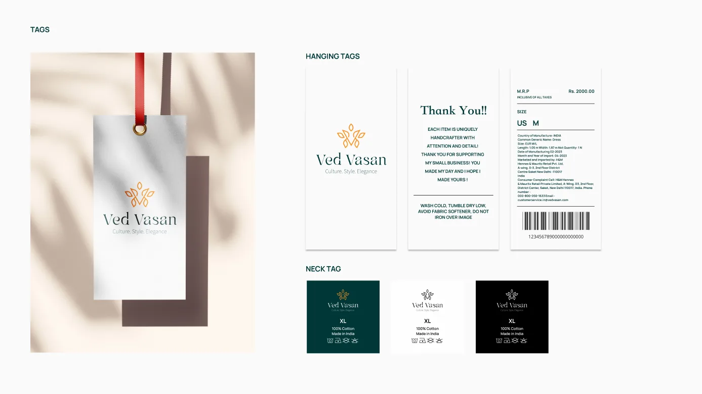
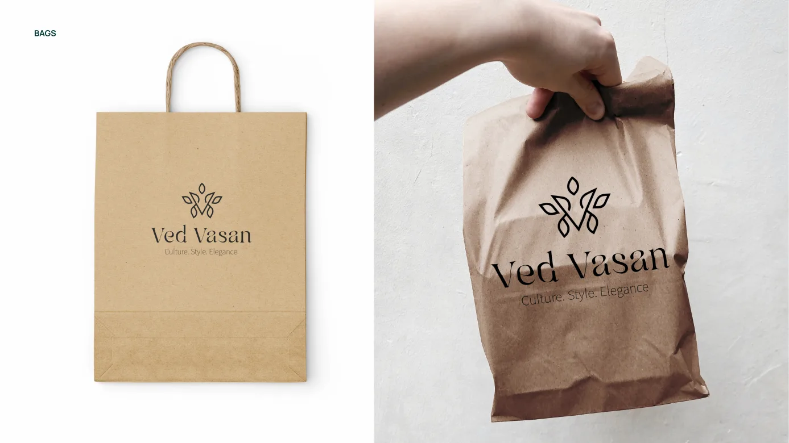
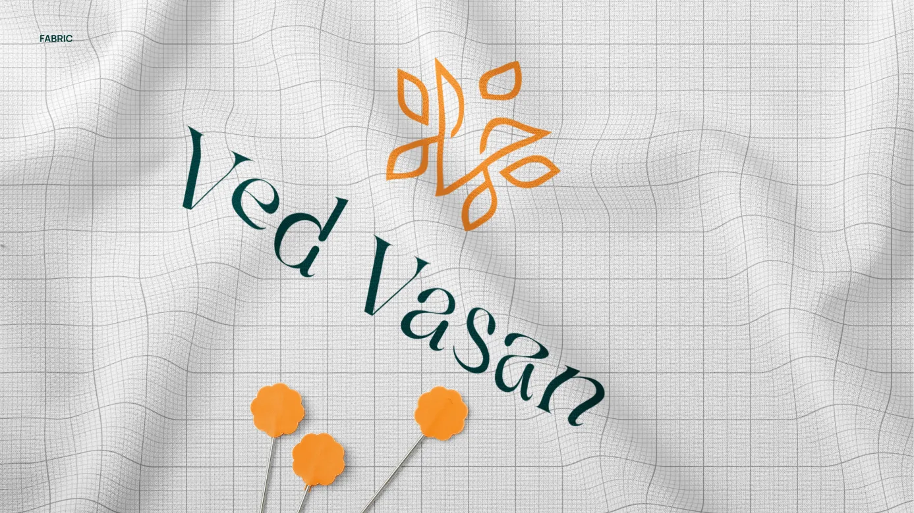
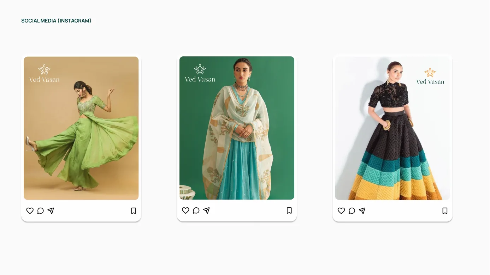

Projects Ved Vasan
Ved Vasan
Blending Indian heritage with a simple, modern identity.
- Client
- Ved Vasan, founded by Somya Jain
- Year
- 2024
- Deliverable
- Brand design identity and guidelines
- Scope
- Brand story, verbal identity, mark, logo, typography, colour, pattern, packaging and social mockups
00 At a glance
- The brief
- Give a new mid-segment clothing label a face that honours Indian textile heritage without looking dated.
- What I did
- Shaped the brand story and voice, then designed the mark, logo, type, colour, pattern and everyday touchpoints.
- Where it landed
- A complete brand system that stays simple enough to sit on a hang tag, a paper bag or an Instagram post.
01 The brand
Tradition and modern style, without choosing between them.
Ved Vasan is a mid-segment clothing brand dedicated to fusing the rich heritage of Indian textiles with modern design. Each piece is crafted with meticulous attention to detail, reflecting a commitment to quality, authenticity and sustainability.
Its collections are designed for fashion-forward individuals who appreciate cultural elegance and modern trends.
Mission
To provide stylish, high-quality and affordable clothing that seamlessly blends traditional aesthetics with modern trends, empowering individuals to express their unique style with comfort and confidence.
Positioning
Ved Vasan blends the elegance of traditional Indian craftsmanship with contemporary fashion trends to create high-quality, affordable clothing for the modern individual. Its commitment to authenticity, comfort and sustainability means each piece looks good and feels good, letting people express their style with confidence and grace.
Brand story
Somya Jain, a Chartered Accountant by profession and a visionary by heart, set out to blend her love for numbers with her passion for fashion. Born and raised in India, she grew up surrounded by the vibrant colours and intricate designs of traditional textiles. Despite a successful career in finance, she always held a deep appreciation for the artistry and craftsmanship of Indian heritage.
Driven by a desire to bridge the gap between tradition and modernity, Somya founded Ved Vasan. Drawing on her roots and her eye for detail, she curated a collection that celebrates the timeless elegance of Indian textiles while embracing contemporary fashion trends.
02 Verbal identity
A voice as warm as the fabric.
A brand’s verbal identity is its personality expressed through language: the words in advertising, the tone of customer service, the way it speaks to people. For Ved Vasan it began with five traits.
Personality
Trendy yet timeless
Combines contemporary fashion with timeless traditional elements, creating a unique blend that appeals to fashion-forward individuals who appreciate cultural heritage.
Approachable
Exudes warmth and friendliness, making it accessible and relatable to a broad audience.
Trustworthy
Reliable, consistently delivering high-quality products and maintaining ethical practices.
Culturally rooted
Deeply respects and draws inspiration from cultural heritage, infusing it into modern designs.
Forward-looking
Innovative and forward-thinking, always seeking new ways to blend tradition with modernity.
Brand voice
The voice of Ved Vasan should reflect its personality and communicate effectively with its target audience. It should be:
Friendly and approachable
The tone is warm and inviting, making customers feel welcome and valued.
“Welcome to Ved Vasan, where tradition meets trend! We’re thrilled to help you discover your unique style.”
Confident and refined
The language conveys confidence in the brand’s quality and style, with an elegant touch.
“Experience the perfect blend of elegance and contemporary fashion with Ved Vasan’s exclusive collections.”
Engaging and relatable
Communication is clear and engaging, resonating with the audience’s lifestyle and interests.
“From work to weekend, our versatile designs ensure you look effortlessly chic, every day.”
Culturally enriched
Occasional cultural references connect with the audience on a deeper level.
“Inspired by the rich heritage of Indian artistry, our designs celebrate tradition in a modern avatar.”
03 Visual identity
A V that grows like a plant.
Logo
The mark is a monogram V built from leaf shapes. Leaves rise from its arms and tip, giving it the feel of a growing plant, a nod to natural fibres and to the brand’s sustainability promise. A single continuous line keeps it light and modern.
The mark sits above a refined serif wordmark and the tagline Culture. Style. Elegance. A shared grid sets the spacing between mark, name and tagline, so the lockup stays balanced at any size.

Colour
Deep teal carries depth, sophistication and stability. Carrot orange signals luxury, quality and prosperity. White adds purity and clarity. Together they pair heritage richness with a clean, modern canvas.
- Deep TealPrimary
#013737 - Carrot OrangeAccent
#FF9327 - WhiteCanvas
#FFFFFF
Typeface — Manrope (modern sans serif, minimal stroke contrast, semi-closed aperture)
Aa12345
Colour adaptions
The logo works in colour, white and black, on teal, orange, white and black backgrounds, so it holds up on fabric, paper and screens.
Pattern
The mark repeats into a textile-style pattern in teal and soft orange. It works as a border, a packaging wrap or a background, and carries the brand where the full logo would be too much.


04 In use
From hang tag to Instagram feed.
To test the system, I applied it across the touchpoints a clothing label lives on: tags, bags, fabric and social media. The mark and pattern did the work, and the layouts stayed uncluttered.



